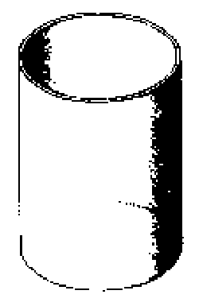
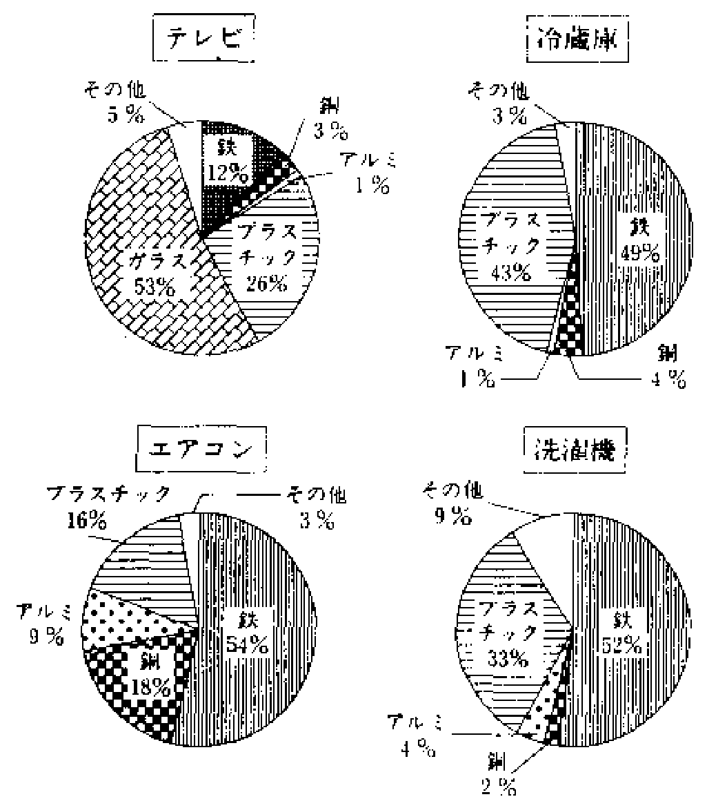
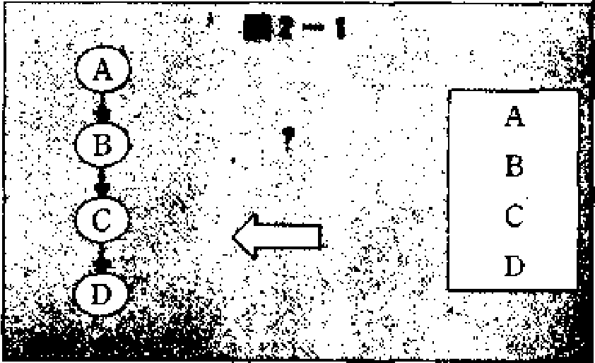

（1）
遺跡
問1 新たな遺跡の発掘によって、古代人の生活に関する従来の認識が改められた。
問2 彼は組織全体をよく把握している。どんな問題が起きても、柔軟かつ迅速にことをおさめるので、彼を崇拝している部下も多い。
問3 話し言葉の変遷についての資料を集めるのは容易なことではない。
問4 その小説家は、視力の衰えに脅かされながら小説を完成した。そして、長年彼を支えてくれた賢明な妻に心を込めてそれをささげた。
（例）この商店街には、人がおおぜい買い物に来る。
例の文の下線の言葉は、ひらがなで「しょうてん」と書きます。1から4の言葉はそれぞれ、1は「しんてん」、2は「せいてん」、3は「げんてん」、4は「しょうてん」と書きます。例の文の「しょうてん（商店）」と4の「しょうてん（焦点）」はひらがなで同じ書き方ですから、正解は4です。
| （例） | ① | ② | ③ | ● |
問1 自分の考えをかんけつに分かりやすくのべるためには、まず言いたいことをかじょうがきにするといい。
問2 企業における外国人労働者のたいぐうについて、雑誌がとくしゅうをくんだ。
問3 彼は、雪山でそうなんし、きょくげんの状態を経験した。
問4 税金をおさめるのに借金をいらいしたが、ぼうだいな額のためにことわられた。
問5 車がしょうとつしそうになり、じゅみょうがちぢまる思いをした。
（例）大臣は災害の現場をしさつした。
例の文の下線の言葉は「視察」と書きます。1から4の言葉はそれぞれ、1は「摩擦」、2は「撮影」、3は「診察室」、4は「印刷」と書きます。例の文の「視察」の「察（さつ）」と、3の「診察室」の「察（さつ）」は同じ漢字ですから、正解は3です。
| （例） | ① | ② | ● | ④ |
（例）とおす……その作家は、生涯独身をとおした。
はじめに示された文の中の「とおす」は、独身を「つづける」という意味です。1、2、3の「とおす」は、それぞれ「通過する」、「案内する」、「合格させる」という意味ですが、4の「とおす」は、従来の方針を「つづける」という意味ですから、正解は4です。
| （例） | ① | ② | ③ | ● |
同じ1つの事柄でも、表現のしかたで大いに印象が異なってくる。学生たちに、「私たちの人生はたかだか100年、短いものだ」と言っても同意の反応はない。100は小さい数だが、「年」は長いと感じているから、100年は短くないのだ。しかし、「私たちの人生はたかだか30億秒、短いものだ」と言い換えると「おや！そうだなあ」という顔つきになる。目の前を刻々と流れる「秒」という時間は極めて短いから、30億という大きな数でも相殺できない（注1）からだろう。（中略）
どんな話題でも、数字を挙げると正確そうに見えるが、その数と単位の組み合わせによって、わかりやすくも、わかりにくくもなる。その使い分けに十分注意する必要がある。数字が出された根拠とともに、数の単位に注意しておかないとごまかされることがあるからだ。実感を伴わない巨大な数か、いかにも大したことがなさそうな小さな数字で煙に巻いてしまう手口（注2）が、よく使われている。
交通事故数を例にとってみよう。日本では、1年で約1万人が交通事故で亡くなっている。好調阪神で満員になった甲子園（注3）の観客5人に1人が（つまり、あなたの前後左右の誰かが、いやあなた自身かもしれない）1年のうちに亡くなり、5年で観客がゼロになるくらいの多い数である。しかし、1日にするとほぼ30人で、それを1つの都市にするとゼロか1人だから、「今日の交通事故数」（注4）が警察署前に提示されても人々は大きな数とは思わない。つまり、あの掲示は、交通事故の恐ろしさを伝えているのではなく、逆に交通事故は少ないのだと安心させており、かえって事故を増やす効果になっていると言えるだろう。
昨年、戦後の交通事故の死者総数が50万人を超えたという報道があった。日本は、事故から24時間以内の死者しかこの統計に入れないが、国際的に主流となっている30日以内の死者数とすると60万人を超えるだろう。この数は静岡市や新潟市のような地方中核都市の人口に匹敵し、それだけの数の人々がすべて交通事故で姿を消してしまったことを意味する。このように積分する（注5）と「交通戦争」という言葉が実感できる。警察署の前には、せめてこの累積（注6）死者数が掲示されてしかるべきだ（注7）と思う。
クルマ社会の異常さを感じている私だから交通事故数を話題にしたのだが、このような数字のトリックはどこにでもころがっている。なぜそのような数字として発表したのかを考え、発表者の意図を見抜くことが大事だと思う。
（「銀河時評―30億秒の人生」『SCIaS』97/8/1号による）
（注1）相殺できない：ここでは、「30億」から受ける印象が「秒」から受ける印象を打ち消すことができないこと
（注2）煙に巻いてしまう手口：ごまかしてしまう方法
（注3）好調阪神で満員になった甲子園：「阪神」はプロ野球のチーム名。「甲子園」はそのチームの野球場で、全部で5万人ぐらい入る。「阪神」が勝ち続けてその試合を見に来るお客さんでいっぱいの甲子園という意味
（注4）今日の交通事故数：その地域で起きた一日の交通事故数、交通事故による死者数、負傷者数などが発表されている
（注5）積分する：ここでは「これまでの数を総合して考える」と理解してよい
（注6）累積：今までの数字の合計
（注7）～てしかるべきだ：～て当たり前だ
変わった趣味をいくつももっている人に会ったので、いろいろ質問して教えられたことがある。ある単調な趣味について、そんなことが面白いのですか、と聞くと“何でもそうだが、一生懸命やれば面白い”という答えだったので感心した。この人は趣味についてよくわかっている人だと思ったのだが、それは、趣味のみならず仕事でも同じであり、結局、人生全体についても同じなのだろうと思う。
何か面白い趣味はないかという人がいるが、一生懸命やらないのなら趣味はみんなくだらなくてつまらないのにちがいない。ゴルフでも、碁でも、釣りでも、テニスでも、何でもそうだが、下手でも一生懸命やる人と一緒になったときは、気持がよいのはだれしも経験があるところである。ボヤイたり、批評したりしながらやるのでは、本当の面白さはその人から逃げていってしまう。面白さや幸福は自分の内部から湧いてくるものであって、外部に存在するものではないからである。
（中略）
そういう点からいうと、仲間の目をいつも意識している日本人は、なかなか一つのことに熱中できない。周囲から何かいわれるのが恐いので、それへのいいわけを考えたり、逃げ道をあらかじめ作ったりするので、熱中する幸福は知らないまま一生を終わってしまうのが普通になっている。それだけならまだよいが、時には他人にも同じことを要求して何かに熱中している人がいると、いろいろそのアラ（注1）探しをする。アラとして出る理由は、仲間への交際が粗略（注2）になっているというのがいつも第一で、仕事をしていないのではないかというのが第二である。
そういう空気のなかで生活すると、人はだれでも知らず知らずのうちに、
（1）弱者演出
（2）被害者演出
（3）不器用演出
をいつも心がけるようになる。日本人社会で暮らすのに忘れてはならない三種の神器（注3）はこれで、人と話をするときは“私なんかダメですよ”とか、“いつもいいようにやられてばっかり”とか、“失敗ばかりでそんな余裕はありません”とかを必ず三分間に一回ぐらいはいわないとうまくいかない。
栄進（注4）のお祝いをいわれたときでも“三流会社ですから部長になったといっても実態はヒラ（注5）と同じですよ”とか、“ムリヤリ引っぱり出されて委員になっただけで、五里霧中（注6）です”とかの返事をしないといけないことになっている。これはもう礼儀の一種であり、たくさんの人が反復（注7）使用するので磨きぬかれて、ほとんど芸術作品になったようないいまわし方もある。
これは、対人関係円滑化の技術としては確かに有効だし、アメリカ人でもときどきはそういう会話をする。しかし決してホンキでそう思っているのでないところは、日本人として学ばねばならない。多くの日本人は演出を重ねているうちに、それが本当の自分になってしまっている。
（日下公人『新しい「幸福」への12章』による）
（注1）アラ：欠点
（注2）粗略：やり方がいいかげんなこと
（注3）三種の神器：何かをするときに必要な三つの重要な道具
（注4）栄進：今までよりも高い地位や職などに進むこと
（注5）ヒラ：役職についていない人
（注6）五里霧中：ようすがまったくわからず、どうしてよいかわからないこと
（注7）反復：何度も繰り返すこと
（1）アメリカのコラムニスト（注1）、ボブ・グリーンは、結婚後かなりたってから初めて父親となりました。彼はほとんど一昼夜にわたった難産にずっと立ち合った（注2）あと、「この24時間で自分がまったく別の人間になったみたいだ」と記しています。グリーンが「別人のよう」になったという変化は、どのようなものなのでしょうか。グリーンは長い出産への立ち合いを終えて病院から帰宅する道で、乳母車（注3）を押して歩いている女性に出会い、「お子さんはおいくつですか？」と尋ね、「15カ月になります」とその女性と親しく会話を交わしたことを述べ、これまで見ず知らずの女性に声をかけたり、子どものことを進んで話題にしたことなどなかった、それを思わずそうしていた自分をかえりみて、「こんなことははじめてだ！」と自らの変化に驚いてこのエピソード（注4）をしめくくっています。
（柏木惠子『親の発達心理学』による）
（注1）コラムニスト：新聞、雑誌などに短い随筆や評論を書く人
（注2）難産に立ち合う：大変な苦しみを伴う出産をその場で見守る
（注3）乳母車：赤ん坊を乗せて手で押す車
（注4）エピソード：経験したことを短くまとめた話
（2）「おじさん、いい年しているのに案外、気がおけないわネ」
ある初老の紳士、若い女性にそう言われて、年甲斐もなく（注1）、いい気になっていたら、若い世代の間では、気のおけない、が気を許せない、危険な、という意味だと知って、がく然とし（注2）、がっくりきたという、ウソのような本当の話がある。
遠慮のいらない、の意味の気のおけないに、安心のならない、という新しい用法が発生したことをはじめて報告したのは、見坊豪紀氏である。私はもちろん、それを読んで知っていたが、まだ、それはごく一部の俗語（注3）であろうと思っていた。まさか、胸をはって、こちらの方が正しいのだ、と主張する人が出てこようとは夢にも思っていなかった。
（外山滋比古『ことわざの論理』による）
（注1）年甲斐もなく：立派な大人が年齢にふさわしくなく、おろかにも
（注2）がく然とする：意外な事実を知ってひどく驚く
（注3）俗語：正式ではないが世間では使われている言葉
（3）「新電池の基本性能が確認でき、実用化のメドが立ちました」――（中略）
この電池は人工衛星の姿勢制御（注1）などに使っている一種のこま（注2）のようなもので、半径20センチほどの円筒形（注3）。高速で回転運動することによってエネルギーを蓄え、必要な時に電気エネルギーとして放出する。従来の電池が化学反応で電気エネルギーを放出していたのとは仕組みが根本的に異なり、「物理電池」と呼ばれる。
電池は携帯電話から宇宙船まで、産業の動力源として応用範囲が極めて広い。しかも、最近は地球環境保護の視点からも猛烈な勢いで開発競争が進んでいる。
（1998年2月15日付日本経済新聞Sunday Nikkeiによる）
（注1）姿勢制御：正しい姿勢を保つようにコントロールすること
（注2）こま：
（注3）円筒形：

（4）辞書は、言葉の学習になくてはならないものである。自らの言葉であっても、外国語であっても、辞書を引いた経験のない者はいまい。辞書には使用されている言葉のあるがままの姿が載せられていると同時に、言葉の使用を規制する働きもある。つまり、「辞書に載っていない使い方は正しくない」とか「使ってはならない」という考え方である。しかし、実際問題として、辞書に言語活動の表現すべてを記述することは不可能である。辞書を活用することは大切だが、辞書に書いてあることを重視するあまり、言葉の自由な使用が規制される方向に向かうことは、好ましいことではない。
（5）日本では、2001年4月から、「家電（注1）リサイクル（注2）法」という法律が実施される。これはゴミを減らすために、家庭で不要になった家電の処理方法について決めたものである。この法律では、メーカーは販売店などを通じて集められたテレビ、エアコン、冷蔵庫、洗濯機の4種類の家電から鉄、銅、アルミ、ガラスなどを回収し、再び原材料や部品として利用することが義務づけられている。同時に、それぞれの製品について重量の何％ぐらいを再利用しなければならないかというリサイクル率の目標も表のように決められている。
表からわかるように、リサイクル率の目標はあまり高くない。その原因は、家電製品に多く使われているプラスチックがリサイクル法の対象外になったためといわれている。
図のとおり、プラスチックが製品の重量のおよそ3分の1以上を占める（ A ）と（ B ）は、リサイクル率の目標が50％となっている。特に（ B ）は4種類の家電製品の中でプラスチックの使われている割合が最も高い。それに対して、再利用しやすいガラスが全重量の半分以上を占めている（ C ）は、上記の2種類に比べ、リサイクル率の目標が少し高くなっている。また、（ D ）の目標の数字が最も高くなっているのは、再利用の方法が決まっている金属類が多く使われているからである。
表 製品ごとのリサイクル率の目標
| 製品名 | リサイクル率 |
|---|---|
| エアコン | 60％ |
| テレビ | 55％ |
| 冷蔵庫 | 50％ |
| 洗濯機 | 50％ |
図 家電リサイクル法の対象4製品の原材料の割合

（図：1994年度NEDO調査による）
（注1）家電：家庭用電気製品
（注2）リサイクル：資源を再利用すること
（6）
頭の中に一枚の資料を思い浮かべて下さい。大きさはＡ４（注1）でほぼ一枚全部にわたって文章が書かれています。
資料に書かれている内容は、大きくわけて四つの段落から構成されています。ここではＡ、Ｂ、Ｃ、Ｄとします。
この資料の「関係と構造」を図解で表現しましょう。
「あなたも考えてみて下さい」
こう問いかけると、図２－１のように表現する人がいます。特にコンピューター関係の仕事についている人に多く見られます。おそらくフローチャート（注2）になじみがある（注3）せいでしょう。（ ① ）文章の「関係と構造」はこうしたＡからＤへ順に展開していくものはむしろ少ないのです。
ではどのようなものがあるのでしょう。よく見られる「関係と構造」のパターンは初めに結論を持ってくるものです。たとえば「私はＡだと思います」と初めに結論を述べる。そしてその後に原因、根拠、理由などを説明する。「それには三つの理由があります。一つ目の理由がＢ、二つ目はＣ、三つめはＤ」という具合です。
このパターンの「関係と構造」を視覚化すれば図２－２の右の図のようになります。
（中略）
さて二番目のパターンは、初めに原因や根拠、理由を持ってくるものです。たとえば「今のやり方で職場はＢで困っています。新入社員からはＤという意見が出ています。女性社員の中からＣというクレーム（注4）が寄せられています」という場合です。そして最後にそれらから導き出される結論を述べる。「だからＡを提案します」と。このパターンの「関係と構造」を視覚化すれば図２－２の左の図のようになります。

（飯田英明『「図解表現」入門』日本経済新聞社 による。図２－１は一部省略した。）
（注1）Ａ４：紙のサイズの規格の一つ
（注2）フローチャート：手順がわかるように図を並べて線でつないだもの
（注3）なじみがある：慣れてよく知っている
（注4）クレーム：苦情